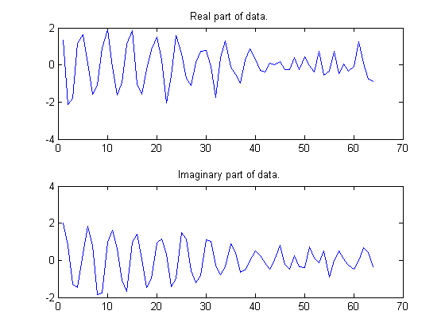
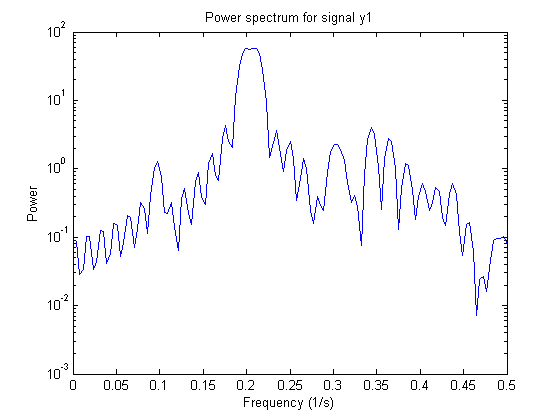
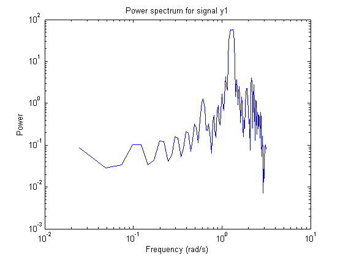
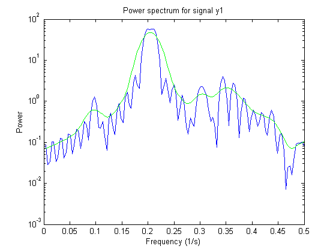
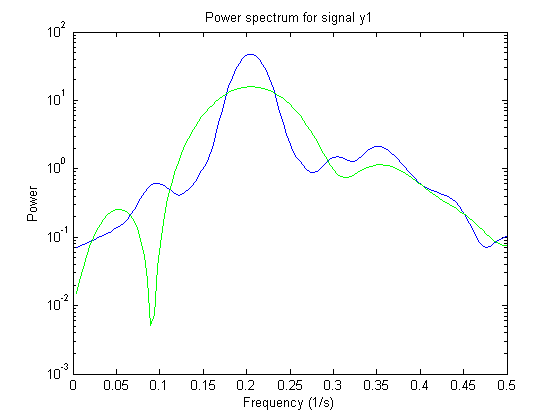
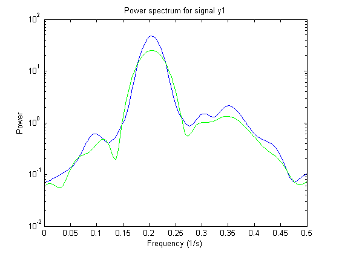
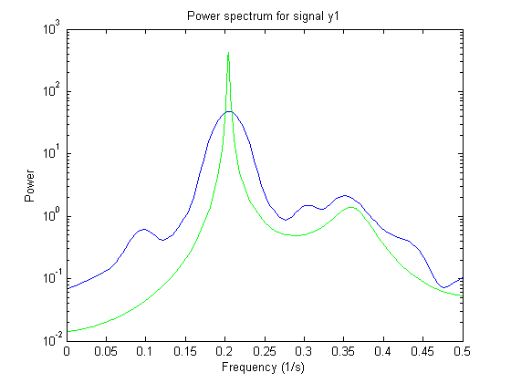
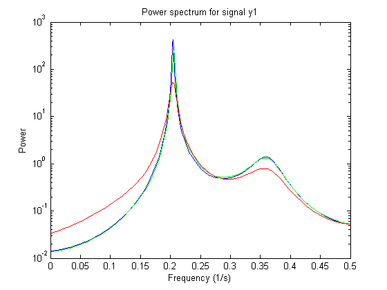
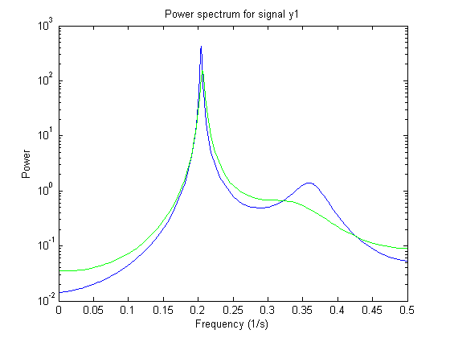
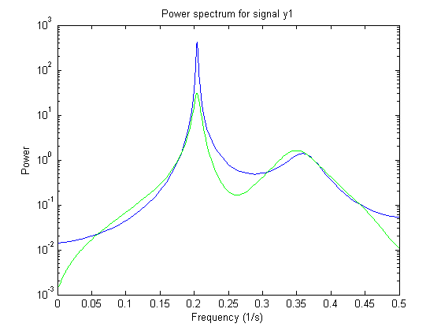

Spectrum Estimation Using Complex Data - Marple's Test Case
In this demo we consider spectrum estimation, using Marple's test case (The complex data in L. Marple: S.L. Marple, Jr, Digital Spectral Analysis with Applications, Prentice-Hall, Englewood Cliffs, NJ 1987.)
Contents
Test Data
Let us beginn by loading the test data:
load marple % Most of the routines in System Identification Toolbox(TM) support complex % data. For plotting we examine the real and imaginary parts of % the data separately, however.
First, take a look at the data:
subplot(211),plot(real(marple)),title('Real part of data.') subplot(212),plot(imag(marple)),title('Imaginary part of data.')
As a preliminary analysis step, let us check the periodogram of the data:
per = etfe(marple); ffplot(per)
The spectrum can also be plotted with logarithmic frequency scale as a bodeplot:
bode(per)
Since the data record is only 64 samples, and the periodogram is computed for 128 frequencies, we clearly see the oscillations from the narrow frequency window. We therefore apply some smoothing to the periodogram (corresponding to a frequency resolution of 1/32 Hz):
sp = etfe(marple,32); ffplot(per,sp)
Let us now try the Blackman-Tukey approach to spectrum estimation:
ssm = spa(marple); % Function spa performs spectral estimation ffplot(sp,'b',ssm,'g') % Blue: Smoothed periodogram. % Green: Blackman-Tukey estimate.
The default window length gives a very narrow lag window for this small amount of data. We can choose a larger lag window by:
ss20 = spa(marple,20);
ffplot(sp,ss20)
% Blue/solid: Smoothed periodogram.
% Green/dashed: Blackman-Tukey estimate.
 Estimating an Autoregressive (AR) Model
A parametric 5-order AR-model is computed by:
t5 = ar(marple,5);
Compare with the periodogram estimate:
ffplot(sp,'b',t5,'g') % Blue Smoothed periodogram. % Green 5th order AR estimate.
The AR-command in fact covers 20 different methods for spectrum estimation. The above one was what is known as 'the modified covariance estimate' in Marple's book.
Some other well known ones are obtained with:
tb5 = ar(marple,5,'burg'); % Burg's method ty5 = ar(marple,5,'yw'); % The Yule-Walker method ffplot(t5,tb5,ty5) % blue: Modified covariance % green: Burg % red: Yule-Walker
Estimating AR Model using Instrumental Variable Approach
AR-modeling can also be done using the Instrumental Variable approach. For this, we use the function ivar:
ti = ivar(marple,4);
ffplot(t5,ti)
% blue: Modified covariance
% green: Instrumental Variable
 Autoregressive-Moving Average (ARMA) Model of the Spectra
Furthermore, System Identification Toolbox covers ARMA-modeling of spectra:
ta44 = armax(marple,[4 4]); % 4 AR-parameters and 4 MA-parameters ffplot(t5,ta44) % blue: Modified covariance % green: ARMA
Additional Information
For more information on identification of dynamic systems with System Identification Toolbox visit the System Identification Toolbox product information page.